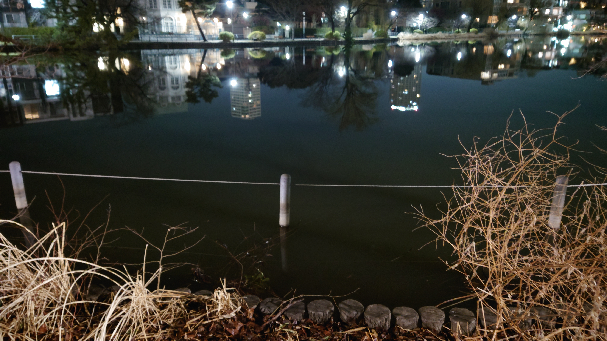

こんにちは、ザクザク食感です。
またまた自分の中で変化があったので書き留めておこうと思う。 以下に僕の今までの考えと変化を記します。
そこに大きな意味はなくて、単に好きなものを共有して、その良さを人と分かち合いたかった。
マリオや、ニコニコ動画、カゲプロ、ポケモン、アイマス、Maison book girl、オモコロ……その時々で共通の趣味の友達を見つけてはめちゃくちゃ喜んでいた。自分と共通の趣味が多ければ多いほどその人にシンパシーを感じた。 これは別に普通のことだと思う。
ただ、それが転じてコンテンツの話題でなければ人に話しかけることができなかった。
今でこそネットに自分語りブログを延々書き続けているが、リアルでできた友達は全員何かしらのコンテンツがきっかけだ。
リアルの友達に自分の精神の話をすることはまずない。これも別に普通かな？でもMOROHAの革命みたいに居酒屋でアツい話をするみたいなことはしなかった。
幼少期は無意識にそうしていたが、思春期になってからは自分の核を守るためにコンテンツの話ばかりしていたと思う。
逆に聞き手に回ることは得意だと思っている。人の話を聞くのは単純に好きなので、進んでその役回りをしにいっていた。
みんなの心を覗きたいな でも私の心は覗かせないのだ（Floating Shelter）じゃん！ 言いたいことはすべてピノキオピーが言っている
僕は僕が嫌いなので、無意識に相手を立てる言動が多くなった結果そう思われている気がする。あと僕は人に優しく生きることだけがモットーなので、意識的にそう思われるようにしている部分もある。
ただこれは人に嫌われるのが怖いことの裏返しでもあるので、その結果僕が優しい人だと評価されることは打算的な気がして、自分で自分を許せなかった。
僕の外殻は人に優しい人格になったけど、嫌われたくないという臆病な気持ちの結果なので、ずっと自己評価と他人からの評価の乖離を感じていた。
以下本文
先日、もう5年くらい繋がっているフォロワーと会って話す機会があった。
長らく見てくれているので僕のことはほぼ全て知られているけど、僕はフォロワーがどんな話し方をするのかすら知らない、みたいな状況だったので、会うまでめちゃくちゃ怖かった。ツイートの内容から感性と言語化能力がものすごく優れていて聡明なことだけはわかっていたので、僕のIQが低すぎて会話が成立するか心配だった。
でもいざ会って話してみると、めっちゃ普通の人だった！！！僕に合わせてくれたんだと思うけど、逆に怖かった。
今までツイートを見ていて気になったことや生い立ちの話をたくさん聞けた。僕も僕の内面の話をたくさんしてしまった。めちゃくちゃ話しやすかった。
僕の全部を知られていることがわかっていたので、コンテンツの話はほとんどせずに、したい話を延々していた。というかそもそもフォロワーとの共通して触れているコンテンツがどれだけあるのか知らない。なのにこれだけ話が続くのが自分でも信じられなかった。しかもオフラインで対面している状況なのに！
僕の外殻がどうとか内面がどうとか全く意識せずに話してしまったので、帰った後にしまった……と思った。それでも仲良くしてくれているネット経由の友達は本当に少ないのでミスったなと思った。
次の日起きてツイッターを見ると、フォロワーのブログに僕と会って話した感想が書かれていた。僕のその日の言動とか僕から受けた印象が記されていて、めちゃくちゃ読みこんでしまった。
「とても気を遣ってくれて話を合わせてくれる」と書いてあった。普段はそうしているつもりだが、何も考えずに自分のことばかり話してしまったと思っていたので意外だった。そんな言動できてたかな……？
他にもいろんな感想が書いてある中で、「人の褒め言葉を受け流すのが上手すぎて会話がヌルヌルしていた」という文がものすごく気になった。どういうこと！？
人から褒められてもそれは僕の打算的な内面が形成した外殻の話であって僕のことではない、と思ってしまうので、褒め言葉を素直に受け止められない部分がある。でも褒めてくれたことに対しては心からありがたいと思うので、ちゃんと受け止めているつもりだった。
でも実際はヌルヌルしていたみたいなので、自分の言動を第三者の目線で知れて面白かった。
他人からどう見られるかをめちゃくちゃ気にしてしまう性格なので、相手の心を見透かす能力者になったみたいな気分になれてめちゃくちゃ面白かった。もっとやってください！
By the way
リアルで7年近くつるんでいる友達がいる。その友達とは物語シリーズやモンスト、シャドバで仲良くなって、その延長でいろんなコンテンツの話をしている。特に精神的な話とかはしないけど良い友達だと僕は思っている。
昨日会う機会があって、フォロワーから教えてもらった僕の印象に共感するのか気になったので、それを今の僕から感じるか聞いてみた。
すると全部ドンピシャだったようで、爆笑していた。特に「僕って褒め言葉を受け流して会話をヌルヌルさせてる？」と聞くと大爆笑していた。一回会っただけでそれだけのことを見抜いて言語化するフォロワーの能力をめちゃくちゃ褒めていた。
その友達には僕の内面の部分の話はほとんどしていない。でも僕が内面全開で話したフォロワーが受けた印象に強く共感していた。
外殻がどうとか内面がどうみたいな違いなんて大してなかったのか……？と思った。
この連日の経験を経て、僕の外殻も内面も大した違いはないんじゃないか？と思った。自分では自分を守るために考えて立ち振る舞いをしているつもりだったが、深く話すとそんな差は生まれなくなるんじゃないかと思った。
僕は自分がつくった優しい性格という外殻と、人に嫌われたくないから優しくしているという内面の乖離が嫌だったが、外殻を含めて全部自分なんだ、と気づけた。
僕の外殻を評価されているとしても、それは僕の内面の延長を見られているだけなので、それを褒められたということは自分自身を認めてもいいということなのかもしれないと思えた。
とか考えながら自転車を漕ぎ続けていたら、少し遠くにある水辺の近くまで来てしまった。

ダ散ちゃんがつくったプレイリストを聴いている。良すぎ！！！！！
ノリノリで曲を聴いていると、ごちうさ2期OPの「ノーポイッ！」が流れた。
改めて聴くと、なんていい曲なんだ……と思った。これは人生の応援歌だ！！！他人と関わることを恐れるのをやめよう、趣味が同じだから、精神の深いところを見られているから友達でいるわけじゃないんだ、と気づけた今の僕に歌詞の一文一文が染み込んでくる。
みんなも歌詞を見ながらこの曲を聴いてください……
さみしくて居場所がなくて逃げるように歩き回っていた深夜徘徊と、今しているどこまででも自転車で飛べそうな気分の深夜徘徊はとても対照的だと思った。
いや、絶対に躁なんだよな しかもよりによって急に寒くなった今日衝動が来るなんて……
それでもまた世界が広くなった感覚がして気持ちよかった。明日も労働ですが！

それでは、さようなら。